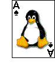

Toolkit

The Ace of Penguins Toolkit allows you to create your own solitaire
games pretty easily. For example, I wrote the first version of
golf in about ten minutes (the toolkit was already done at
that point). My wife watched, and played it when I was done. I later
added more bells and whistles, but the basic game only took ten
minutes.
There are some utilities that come with the toolkit that you'll
need to be familiar with in order to build your game. These tools
allow you to integrate pictures and online help into your program,
much like the Windows(tm) resource compiler. Graphics are created in
the standard GIF format and integrated into your program with the
gif2pack program. Help is written as a limited HTML file and
integrated with text2c. The toolkit has functions that
access these resources when the program needs them.
All Ace programs use the
PNG library and ZLib. Your
system may have them installed, otherwise you'll need to download and
install them.
The library consists of three main parts: A collection of standard
images (including, of course, the deck of cards), functionality to
maintain and manipulate the "table" and interface with X, and a set of
functions to create and manipulate "stacks" of cards.
Getting Started
Your source file must inlude cards.h from wherever you installed
it. In my case, I use #include "cards.h" and let the
Makefile worry about how to tell gcc where to
include it from.
Your program should, in main(), call three functions:
init_ace(argc, argv);
init_table(width, height);
table_loop();
Here, argc and argv are the parameters passed to
main() and width and height are whatever
width and height your window ("table") should be. You'll probably
want to calculate the initial size of the table based on the sizes of
the cards and margins (they're defined in cards.h). The
init_*() calls do everything needed to get the X interface
running. The table_loop() call passes control over to the
Ace library, and does not return. Instead, the Ace library manages
the X interface, and calls functions you define when user interaction
occurs (see the events section below).
Makefiles and Linking
You'll need to add -lpng -lz -lX11 to the end of your link line
in your Makefile. You'll also need to link the Ace library,
which for me means adding ../lib/cardlib.a but you'll need to
do whatever is appropriate for where you installed the library. For
example, if you copied cardlib.a to
/usr/lib/libcards.a then you'd add -lcards instead.
Note that the card library gets linked before the X libraries.
Example:
sol : sol.o sol-help.o sol-img.o
$(CC) $(CFLAGS) -o $@ $^ -lcards -lpng -lz -lX11
Note in the example above that your game will probably consist of at
least three files. First is the game itself (sol.o in this
example). Next is the help file (sol-help.o), which started
as HTML and was converted to C by text2c. Last is the image
library (sol-img.o) which is generated from your pngs by
make-imglib. To build these, you'll need rules like this:
%-help.c : %.html ../lib/text2c
../lib/text2c $*_help < $< > $@
%-img.c : %.png
../lib/make-imglib -i $(srcdir) -n appimglib - $@ $<
Of course, you'll need to adjust these for your situation.
Events
There are a number of functions that you may define in your program to
add functionality. Each of these is called when some event happens,
such as a mouse click or exposure. Here are the events you may define,
with their prototypes:
- void init();
- This function is called once just after your window appears on
the screen. You should use this function to set up the pitures,
stacks, and other data you need to initialize once per program run.
What I do is define a second function called start_over() that resets
the game itself, and have init call start_over as the last thing it
does. That way, I can call start_over from other places also.
- void redraw()
- This function is called whenever part of the X window is
"exposed" and needs to be redrawn. The computer doesn't remember what
was there, it needs to draw it from scratch. Note that the
put_picture functions are designed to work with this event, so that
they will automatically optimize themselves. An X clipping region is
also set up for you. The best way to deal with redraw events is to
redraw the entire window and let the Ace and X libraries worry about
limiting you to the parts that were actually exposed.
- void resize(int width, int height)
- If you provide this function, your game becomes resizable, and
you will be responsible for repositioning all the images and stacks
according to the new size. You will probably need to call
stack_set_card_size (and read back the actual sizes with
stack_get_card_size and stack_get_fans).
- void key(int k, int x, int y)
- This function is called each time the user presses a key. If the
key they pressed is a regular key with an ASCII equivalent (like `h'),
the ASCII code is passed as k, otherwise the keyc ode (like
KEY_F(1) or KEY_UP) is passed. The location of the pointer is passed
as x and y. If you do not define this function, a default is provided
which exits when the user presses ESC or Ctrl-C. Your routine should
do a similar check to remain consistent with other Ace programs.
- void click(int x, int y, int b)
- This function is called whenever the user presses a mouse button.
the primary button is number 1. For maximum compatibility, you should
only check to see if the button is 1 or greater than 1, since the
numbering of buttons isn't guaranteed to be standard.
- void double_click(int x, int y, int b)
- This function is called when the user double-clicks the mouse.
Note that there will be a click() call for the first click but not for
the second. If you do not define this function, click() is called for
every click.
- void drag(int x, int y, int b)
- This function is called when the user moves the pointer while
holding the button down.
- void drop(int x, int y, int b)
- This function is called when the user releases the button.
Table Functions
- CARD_WIDTH, CARD_HEIGHT, CARD_MARGIN
- These macros define the default size of the cards, and the amount
of space you should allow for between cards and around the edge of the
window. By using these macros, your program will have the same style
as other programs written with this library.
- CARD_FAN_DOWN, CARD_FAN_RIGHT,
CARD_FAN_TBDOWN, CARD_FAN_TBRIGHT
- These macros define the default offsets to be used when a stack
of cards is "fanned" in a given direction (only down and right are
supported). The TB versions are for a "tiny bit" of fanning;
just enough to hint at the value of the card, whereas the others
offset them enough to clearly see the value of the card.
- void init_ace(int argc, char **argv)
- This function initlizes the Ace library. It processes all
command line options and connects to the display. After calling this,
the global variables display_width and
display_height are valid, and table_width and
table_height are non-zero if the user requested a specific
size on the command line. If you need to see a command line option,
create an OptionDesc list for your game (see cards.h for details).
- void init_table(int argc, char **argv, int
table_width, int table_height)
- This function sets up the interface to X and creates the initial
window. This function must be called exactly once from
main().
- void table_loop()
- main() must call this function as the last thing it
does. This function will never return. Once called, the library
starts managing the interaction between the user (via X) and the
program (via events).
- Picture *get_picture(char *name)
- This function loads one of the images that you added to your
program with the make-imglib program (either the
application-specific ones, or the standard ones). This function
searches one table prefixed by imglib (the standard set) and
one prefixed by appimglib (the app-specific set). Note that
you may call this function at any time, even before
init_table(), since the actual conversion of the image to
native X format is deferred until it is needed. The format of the
Picture type is as follows:
- int w, h; - the size of the image
Note that images may have a non-rectangular shape. This is
automatically handled by the library.
- void put_picture(Picture *picture, int dx, int dy,
int x, int y, int w, int h)
- This puts a picture onto the screen. This should only be called
by an event function, since it (like most of these types of functions)
call X routines. The picture is one as returned by
get_picture. The dx,dy tells where the upper left
pixel of the picture should be placed on the window (regardless of
what sub-part of the picture you are putting). The x,y and
w,h indicate a sub-part of the picture to be shown. In most
cases, x,y will be zero and w,h will be the actual
size of the picture. Note that, during a redraw event, the
library knows what part of the window actually needs to be redrawn,
and may not draw your picture (or only draw part of it) if it's not
needed to redraw that part of the picture.
- void put_picture_inverted(Picture *picture, int dx, int dy,
int x, int y, int w, int h)
- Same as put_picture, except that the picture is inverted
before putting it. Some things to note: On 24-bit displays, each RGB
component is separately inverted, but on other displays "inverting"
means only swapping black and white pixels. Plan your pictures
accordingly. Also, there is only one inversion cache, so if you have
multiple inverted images, performance will be degraded.
- void set_centered_pic(Picture *picture)
- This allows the program to tell the library to maintain a single
picture that is displayed centered on the window. This is used by the
splash, win, and lose pictures. Pass a NULL pointer to
remove the picture.
- Picture *get_centered_pic()
- This returns the current centered picture, or NULL if
none. My programs use this in the click and key
events to automatically remove the splash picture on the first event,
and to detect when the user clicks on a win or lose picture.
- void clip(int x, int y, int w, int h)
- This changes the clipping rectangle. Most programs won't need
this, since it's set appropriately by the library during exposures.
- void clear(int x, int y, int w, int h)
- This clears (fills with the table color) a given section of the
window.
- void invalidate(int x, int y, int w, int h)
- Forces the library to redraw part of the table. This is different
than just calling redraw() because it sets the clipping info,
clears the area, calls redraw, and handles the centered picture. This
is the preferred way of causing part of the screen to be redrawn.
Your program should alter the information about the layout, then
invalidate the area and let redraw() update the screen.
- void invalidate_nc(int x, int y, int w, int h)
- Same, except that the area is not cleared first. This is an
optimization for the case where you're adding an image, and you don't
want the screen to flash the background color.
- void invalidate_exposure(int ox, int oy, int ow, int oh,
int nx, int ny, int nw, int nh)
- This is a specialty function for the case where you're moving
something from one point to another. Pass the old and new regions,
and it will invalidate the portion of the old region that isn't
covered by the new region. You'd then use invalidate to
update the new region (or just put_picture). By doing it
this way, you can avoid flickering.
- void flush()
- This forces all drawing operations to be pushed to the server
immediately, rather than cached. You should use this between
iterations of an animation to ensure that the server is updating the
screen at a steady pace.
- void beep()
- It makes a beep. Go figure.
- void text(char *s, int x, int y)
- This draws the given string at the given coordinates on the
window. Note that the coordinates are the lower left corner of the
region the text occupies, not the starting baseline point. The font
can be assumed to be a monospaced font, with each character occupying
a rectangle of width font_width and height
font_height (defined in cards.h). This avoids the
messy calculations involving descenders and bearings.
- void help(char *filename, char *text)
- This invokes the help system. Pass a file name and a pointer to
the file's data as prepared by text2c. If the file exists,
it is used, else the data is used. All the events are redirected to
the help system until it decides to give control back.
- void snap_to_grid(int *x, int *y,
int step_x, int step_y,
int origin_x, int origin_y,
int max_distance)
- This function is a general-purpose grid alignment function. Pass
the coordinates you want to align as x and y. The
grid is determined by the step and origin
parameters, with the origin indicating one of the points to
snap to. If the given point is more than max_distance from
one of the grid points, x and y are unchanged, else
x and y are replaced with the closest grid point.
Note that max_distance is not a pythagorian distance, it's an
absolute value of the distance along each axis independently (i.e. it
defines a square of side 2*max_distance centered on the grid
point, not a circle of radius max_distance).
Stack Functions
The stack functions all deal with stacks of cards. Each card is
described by a single number that encodes its value, suit, and whether
the card is face up or face down. cards.h provides a number
of macros for dealing with these numbers. Also, the standard ace
library provides all the images matched up with these numbers, so you
do not need to worry about them. Each stack is positioned on the
table, and may be neatly piled up or fanned to the right or down.
Note that the type Stack is an opaque pointer. All stacks
are of type Stack * but there are no fields you may access
directly.
- MAKE_CARD(s, v, f)
- This macro combines the suit (s), value (v),
and face-upness (f) into a single card number. The suit is
one of SUIT_HEARTS, SUIT_DIAMONDS,
SUIT_CLUBS, or SUIT_SPADES. Note that these are
0..3, but don't rely on that. The value is 1..13,
but you may use ACE, 2..10, JACK,
QUEEN, and KING as well. Zero is reserved for "no
card", so a zero value is not used to refer to a card. The
face-upness is either FACEUP or FACEDOWN. The macro
returns the card number.
- SUIT(c)
- Takes a card number and returns its suit (the SUIT_
macros above).
- COLOR(c)
- Returns the "color" of a card (red or black). Note that no
specific color values are defined; the only thing you can do with the
returned value of this macro is compare it to other values returned by
this macro. In other words, you can tell if two cards are the same or
different colors, but nothing else.
- VALUE(c)
- Returns the value of a card (ACE, 2..10,
JACK, QUEEN, KING).
- FACEDOWNP(c)
- The face-down predicate returns the face-downness of a card. It
returns either FACEUP or FACEDOWN.
- Stack * stack_create(int x, int y)
- This function creates a stack and positions it on the table. The
stack is initially empty and is not fanned in any direction (i.e. the
cards are neatly piled upon each other).
- void stack_destroy(Stack *s)
- This function destroys a stack and frees up the resources it was
using. Most solitaire-type games won't ever destroy stacks, they'll
just reshuffle the cards among them.
- void stack_set_pictures(Picture **fronts, Picture *back)
- This function allows the application to specify the pictures to be
used to display the cards. The fronts array is indexed by
the card number (i.e. MAKE_CARD with FACEUP); you should
allow for 64 slots in your array. The back picture is for
all face-down cards. All pictures should be CARD_WIDTH by
CARD_HEIGHT pixels.
- void stack_load_standard_deck()
- This function loads all the standard card pictures from the
built-in library. Most card games should call this once in
init().
- void stack_move(Stack *s, int x, int y)
- This function moves a stack to a new location on the screen.
While not generally useful to common solitaire games, it is used
internally to drag and drop cards between stacks.
- void stack_set_offset(Stack *s, int which_offset)
- This function changes the offset for each card in a stack. By
offsetting cards, the player can view parts of obscured cards, thus
being able to see the value of the card. Valid values for
which_offset are STACK_OFFSET_NONE,
STACK_OFFSET_RIGHT, STACK_OFFSET_DOWN,
STACK_OFFSET_TBRIGHT, and STACK_OFFSET_TBDOWN.
The TB versions are for a "tiny bit" of offset.
- void stack_set_card_size(int width, int height)
- Request that the card size be changed, such as after a resize.
Note that the values you give are requests - the library may need to
use a different size. Use stack_get_card_size to find out
what was really used.
- void stack_get_card_size(int *width, int *height)
- Find out how big the current cards are.
- void stack_get_fans(int *down, int *right, int *tbdown,
int *tbright)
- Get the offsets for fan_down, etc.
- void stack_set_empty_picture(Stack *s, Picture *p)
- This lets you specify a picture that is drawn when the stack is
empty. For example, some games want it to look like you're stacking
the cards on top of something. This is where you specify the
something. There is a standard picture called empty.gif that
simulates a small platform for the cards.
- void stack_redraw()
- This function should be called from your redraw()
function (the default redraw does this for you if you don't
specify one yourself). This causes all stacks to redraw their
cars.
- void stack_peek_card(Stack *s, int n, int show)
- This function lets the player "peek" at an otherwise obscured
card. What it does is force that card to be drawn on top of all the
other cards in the stack, regardless of where it is in the stack.
This is used to support the right-mouse button in solitaire, which
lets you see the suit of obscured cards. Note that this function will
not show you the face of a face-down card. Note that when n
(the index of the card in the stack) is zero, it means the bottom-most
card on the deck (the one closest to the table, not the one closest to
the bottom of your monitor). The top-most card (the one the player
sees the most of) has the highest number, one less than
stack_count_cards() returns. Pass a non-zero value for
show to show the card, or pass zero to put the card back and
show the stack normally.
- int stack_count_cards(Stack *s)
- Returns the number of cards in the stack. Zero means empty.
- int stack_get_card(Stack *s, int n)
- Returns the number of the given card on the stack (suitable for
the SUIT, COLOR, and VALUE macros, etc).
- void stack_add_card(Stack *s, int c)
- Adds one card to the top of the given stack.
- int stack_take_card(Stack *s)
- Removes one card from the top of the stack and returns it.
- void stack_change_card(Stack *s, int n, int c)
- Changes the given card to the given number. Note that whan
n is zero, that indicates the bottom-most card. This
function is most often used to change a card from FACEDOWN to
FACEUP.
- void stack_shuffle(Stack *s)
- This function randomizes the sequence of the cards stored in the
stack. To simulate a deck of cards, you'd create one stack and fill
it with all 52 combinations (or more, depending on the game) and
shuffle it. Then, you'd use one of the other functions (like
stack_flip_card) to move cards from this "deck" to the other
stacks. To restart the game, use stack_flip_stack to move
them all back to the deck, shuffle again, and start over.
- int stack_find(int x, int y, Stack **stack_ret, int *n_ret)
- This function is used by the click type events to
identify which card the player selected. You pass it the x,y
of the event, and a pointer to a stack pointer and integer. If the
player selected a card, the stack_ret and n_ret
variables are set to the stack and index into the stack they selected
(when n_ret is zero, they selected the bottom-most card) and
a non-zero value is returned. If the player did not select a card,
stack_ret and n_ret are unchanged and a zero value
is returned.
- int stack_drag_find(int x, int y, Stack **stack_ret)
- When dragging a stack, this function tells you which stack you
have dragged it over. Similar to stack_find. Note that the
library remembers what you're dragging from stack_begin_drag
and will do the Right Thing.
- int stack_card_posn(Stack *s, int n, int *x, int *y)
- Given a card in a stack (when n is zero, it refers to the
bottom-most card), find its position on the table. This takes into
account the offset the stack might have. The size of the card is
CARD_WIDTH by CARD_HEIGHT. If the card specified
exists, x and y are set to the coordinates of the
upper left pixel and a non-zero value is returned, else zero is
returned and x and y are unchanged.
- int stack_move_cards(Stack *src, int n, Stack *dest)
- Causes card n from stack src, and all cards on
top of it to be moved to the top of stack dest. The
face-upness is not changed. When n is zero, all cards are
moved.
- void stack_move_card(Stack *src, Stack *dest, int flag)
- Like stack_move_cards but moves just one card.
- void stack_flip_cards(Stack *src, Stack *dest, int num, int flag)
- Take num cards from src, flip them over, and put
them on top of dest. If flag is nonzero then
stack_undo considers this an automatic move.
- void stack_flip_card(Stack *src, Stack *dest, int flag)
- Like stack_flip_cards but flips just one card.
- void stack_flip_stack(Stack *src, Stack *dest, int flag)
- Like stack_flip_cards but flips the entire stack.
- void stack_animate(Stack *src, Stack *dest, int flag)
- Moves one card from src to dest, but does it in
such a way that the player can see it moving from one to the
other. If flag is nonzero then stack_undo considers
this an automatic move. You should use this for auto-play so that the
player can see what's happening.
- void stack_undo()
- All operations on stacks are recorded. Calling this function
reverses those operations. You may continue calling this function,
and it will continue reversing the operations, until no more exist.
Calling it when no further undo is available causes no actions.
- void stack_undo_reset()
- This function erases all undo information. You should call this
function after dealing the cards each time you start (or restart) a
game, so that the player cannot undo the deal itself.
- void stack_begin_drag(Stack *s, int n, int x, int y)
- This function is one of three that coordinate drag-and-drop
between stacks. With this function, you identify what you are picking
up - the stack, the index of the card within the stack (when
n is zero, the whole stack is picked up), and the coordinates
of the pointer at the time you picked it up. If you call this
function while a drag is in progress, the previous drag is
cancelled.
- void stack_continue_drag(int n, int x, int y)
- Called in your drag() function, this tells the library to
move the cards you've picked up to a new location to follow the
pointer. The library maintains a constant offset relative to the
pointer to give it a "natural" feel (the card don't jump into your
hand, for example). You also must pass the index of the card that is
allowed to be dropped at that time (use stack_drag_find). As
you pass different values of n to this function, the window
will change to reflect carrying the right number of cards. If you
pass n greater than the largest card index (see
stack_count_cards), a special graphic that indicates "drop
not allowed here" is used.
- void stack_drop(Stack *onto, int n, int flag)
- This function ends a drag-and-drop operation by specifying which
cards from the original stack are to be dropped onto onto.
If flag is nonzero then stack_undo considers this
an automatic move.
You may pass the original stack as onto or pass n
greater than the largest card index (see stack_count_cards)
to cancel a drag operation.
Adding Pictures
It is to be expected that most applications will have some pictures
that are specific to that application. For example, the splash screen
("Welcome to my game") usually has the name of the application, so it
will be specific. Each application is allowed to create one
additional library of pictures that can be linked into your program;
the library has the other one. To add images, paint your images in
standard PNG format (no animations, transparency is supported). Then,
call make-imglib like this:
gif2pack -i $(srcdir) -n appimglib - mypictures.c *.png
Of course, replace mypictures.c and *.png with
appropriate stuff for your application. This will create a C source
file that contains your image data. Then, compile and link that
source with your other sources. By calling your picture library
appimglib, the ace library functions will automatically use
it. When you call get_picture, pass the name of the original
file (*.png) but without path info or ".png". Run
"make-imglib -h" for a detailed list of options.
Calling X Directly
If you must call X directly (to draw lines or whatnot), look in xwin.c
for a list of non-static variables you can use after your
init() function is called. These are:
extern Display *display;
extern int screen;
extern Visual *visual;
extern Colormap cmap;
extern Window window;
extern Window rootwin;
extern GC gc;
extern XFontStruct *font;
You'll also need to include whatever X headers you need. Note that
during exposures, the clip mask in the gc is set as needed. If you
must mess with the clip mask, be careful to restore it if you can, or
create your own GC to draw with.
If you do this, your program will not be portable to other
windowing systems if/when that ever happens.
Online Help
To add online help to your application, you need to write the help
file in plain HTML. There are only a few HTML constructs that are
recognized, and you must write valid HTML. Note that
closing tags are not optional if you want it to work right.
Here are the supported tags. You must use lower case, and when the
tag allows options (like img) they must be provided in the
order given with exactly the syntax shown. The HTML parser will not
accept just any HTML file. When a closing tag is shown, it is
mandatory. Tags may be nested, but do not need to be properly nested
(you should properly nest them, but the program won't blow up
if you don't).
- <b> . . . </b>
- Bold
- <i> . . . </i>
- Italics
- <tt> . . . </tt>
- Teletype (monospaced) font
- <big> . . . </big>
- Big font
- <h1> . . . </h1>
- Primary headers. These are used to create the tabs that separate
pages, so don't use any other HTML inside an H1, avoid newlines, and
keep it short.
- <h2> . . . </h2>
- Secondary headers. Same as <p><big><b>. You
should put one of these (with more elaborate text) after each H1 so
that each page has a title banner.
- <p> . . . </p>
- Paragraph. Note that both <p> and </p> do exactly
the same thing - they cause the next "thing" (word or picture) to
start a new paragraph - but you should use them properly anyway.
- <br>
- Line break. The next "thing" will be at the left margin of the
next line. Multiple BR act like one BR.
- <img src=file>
- <img align=center src=file>
- <img align=left src=file>
- <img align=right src=file>
- An image. No quotes around the file name, which is as you'd pass
to get_picture (since that's what it does). The
align=center variant aligns the picture vertically centered
on the line. If text is included in the line also, the text
centerline (not the baseline, but half the height of an "m") aligns
with the image centerline. Left and right alignment cause the image
to float to the margins, with text wrapping around them.
While developing the HTML help, run your application such that the
filename passed to help() refers to your HTML file. Then,
press F1 to invoke the online help of your application, and
it will read the file instead of using the built-in text. Each time
you exit help (F1 again, or Esc) and re-invoke it,
it re-reads the help file (you don't need to exit your
application).
When you're done, use text2c to convert the HTML file to a C
source file, which you can compile and link in to your application:
text2c my_help < mygame-help.html > mygame-help.c
That first argument (my_help in this example) defines the
name of a symbol which you then refer to in your program:
extern char my_help[];
...
help("mygame-help.html", my_help);
Copyright © 2001 DJ Delorie